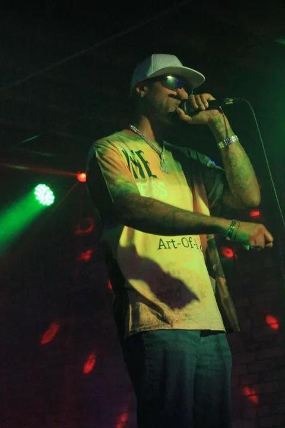

Press & media kit
Press kit
Logos, bios, photos and contacts for media, promoters and partners.
01At a glance
Fact sheet
- Company
- PSP Entertainment
- Production company
- Punkin Seedz Productions
- Founder & CEO
- Angie Minard
- June Arness
- Hip-Hop · Grand Rapids, Michigan · PSP Entertainment
- Sativa Reyes
- Goth-Rap / Underground Hip-Hop · Chicago suburbs · Punkin Seedz Productions
- Dezire Tha Singer
- R&B · Punkin Seedz Productions
03Artist bios
Bios
Artist biographies. Open one to read or copy it.
June Arness
June Arness · Hip-Hop · Grand Rapids, Michigan
June Arness is a Major Independent Recording Artist based in Grand Rapids, Michigan, and signed to PSP Entertainment. With three full-length projects and a catalogue available on every major streaming platform, including Apple Music, Pandora, iHeartRadio and YouTube Music, June has carved out a distinct lane in hip-hop that blends raw authenticity with cinematic energy.
His latest album, The Art-of-Fact (Un Earthed) (2025), is a 17-track, 59-minute statement of purpose: part autobiography, part manifesto.
He has published music with major recording artists such as Rob Ruler Cyph of Cop Hevy Ent., cementing his credibility in the industry and proving he moves in elite circles.
Sativa Reyes
Sativa Reyes · Goth-Rap / Underground Hip-Hop · Chicago suburbs
Sativa Reyes is an emerging goth-rap artist from the Chicago suburbs, blending raw emotion, atmospheric melodies and gritty hip-hop into a fresh, new, distinctive sound.
Originally performing under the alias Sa6t6an6aS starting in 2019, the artist rebranded as Sativa Reyes in 2023 and relaunched into the music scene.
Sativa Reyes is currently signed to Punkin Seedz Productions and managed by Angie Minard.
Dezire Tha Singer
Dezire Tha Singer · R&B
Dezire, also known as Dezire Tha Singer, is an emerging R&B artist, singer, songwriter and music creator bringing a unique blend of emotion, femininity, confidence and real-life storytelling to her music.
With a passion for creating music that connects with listeners on a personal level, Dezire uses her voice and creativity to turn experiences, emotions and relationships into songs that people can feel.
Beyond performing, Dezire is passionate about the creative side of music, including songwriting, engineering and producing. Her vision extends beyond simply being an artist: she is building a lasting brand and creative legacy centered on authenticity, originality and artistic expression.
Known for her distinctive sound and feminine aesthetic, Dezire continues to develop her artistry while expanding her presence across music and digital platforms. Her growing catalog shows different sides of her artistry, from vulnerable and romantic records to confident, sensual and unapologetic anthems.
Dezire is currently signed to Punkin Seedz Productions, where she continues to develop her career and release new music. With more music and creative projects on the way, she is focused on establishing herself as an artist whose voice, story and vision leave a lasting impression.
04Downloads
Press photos
Click a photo to download it. Please credit PSP Entertainment.


Higher-resolution photos and a downloadable press kit (PDF) will be added here when available.